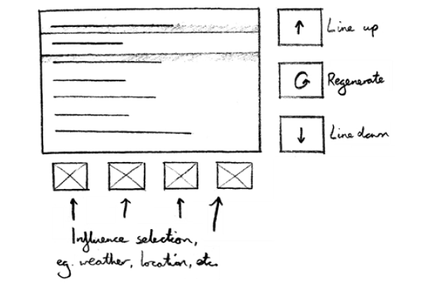
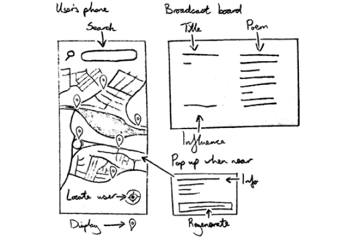
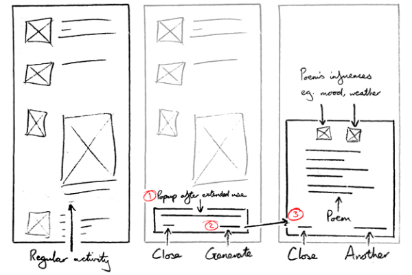

Poetry Machine
Interaction design for AI-generated poetry.
Introduction
For six weeks across July and August 2020, I participated in the University of Lincoln's Undergraduate Research Opportunities Scheme. The project I worked on involved interaction design for AI-generated poetry, exploring the possibility of AI one day generating bespoke media based ona user's interests, surroundings, or input.I worked on the project alone but had weekly meetings with my supervisor.
Exploration
Before I began work on the project, I found some relevant literature to further educate myself in the field of AI-generated media and to seek inspiration for my upcoming designs.
I collated a list of choices I would have to consider before developing my designs, including who the system would be targeted at, how they would interact with the system, and how they would use the system's output.
Using the list of choices I had found, I picked different answers to each question and made a note of the outcomes. I used these aswers to develop three concepts, each with its own set of choices. The initial concepts that I came up with were:
Screens embedded into the backs of public transport seating, allowing passengers to randomly generate lines of poetry and create a full poem line by line. 
A mobile application in which users can generate random poems based on their own input of photos, words, or their location and display the result on nearby real-world broadcast screens such as digital billboards. 
A system to help users spend time on their mobile devices more mindfully by offering relevant poetry to help them reflect on their device usage sessions. This was the idea that I decided to continue developing. 